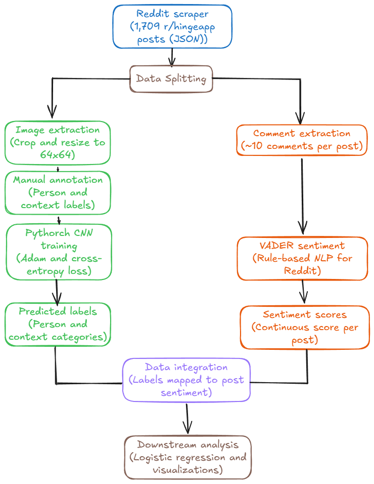

Classifying social context in dating app photos and correlating it with peer sentiment.
Team: Makda Dejene, Sively De Los Santos, Kambinachi Obioha
(Makda's Content)
(Makda's Content)
Our dataset is sourced from the r/hingeapp subreddit, a community where users voluntarily share their Hinge dating profiles to receive peer crtiques. We scraped 1,709 naturalistic posts containing profile images, post metadata, and community comments...

Figure 1: End-to-end data and machine learning pipeline.
To convert unstructurds image content into structured analytical signals, we built a custom Convolutional Neural Network (CNN) framework using PyTorch. We trained two separate CNN models: One to classify the subject of the photo (selfie, solo, gorpu) and another to classify the background context...
While the computer vision models parsed the visual data, we utilized NLP to quantify the community's reaction to each profile. We used the VADER to evaluate the comments under ecah post, creating a continuous sentiment score...
(Sively's Content)
(Sively's Content)
In this project, we successfully developed an end-to-end machine learning pipeline capable of parsing, classifying, and evaluating the social context of dating app profile pictures. Prior research has historically focused on evaluating photos based purely on facial attractiveness, which neglects the crucial contextual signals-such as social status, hobbies, and setting-that users convey to potential matches...